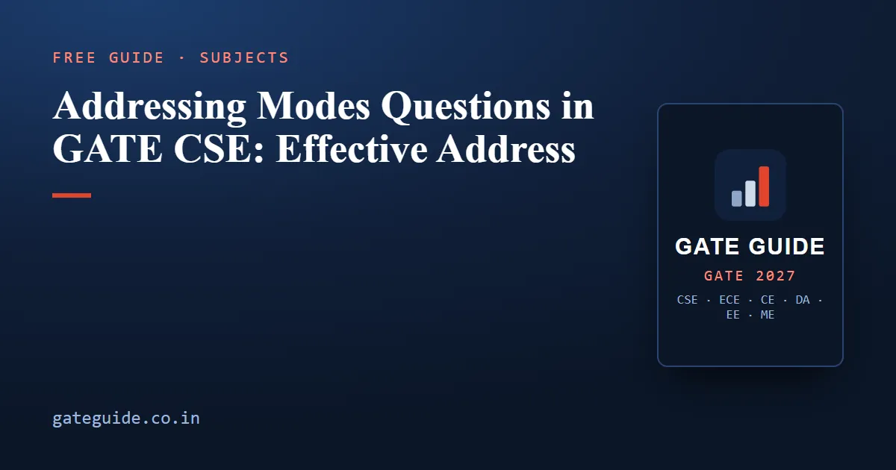

Addressing Modes Questions in GATE CSE: Effective Address

Addressing-mode questions in GATE CSE ask three things: which mode an instruction uses, where its operand is (the effective address), and how many memory references it costs. A fourth form asks for a PC-relative branch offset. This guide teaches every common mode on one running example, so you can see each mode fetch a different value from the same memory. It ends with the instruction cycle and a short RISC versus CISC comparison.
In this guide
Key takeaways
- An addressing mode is the rule that turns an instruction's address field into the operand.
- The effective address (EA) is where the operand sits in memory. Immediate and register modes have none.
- Count one memory reference per memory read. Memory indirect costs two for the operand, register indirect one.
- A PC-relative offset is measured from the next instruction, not from the branch itself.
- PC-relative and base-register modes allow relocation; direct addressing does not.
The words you need first
An instruction names an operation and its operands, the values it works on. The addressing mode tells the processor how to find each operand. The effective address is the final memory address of the operand after the mode's rule is applied.
A memory reference is one read or write of main memory. Registers are inside the processor, so reading one costs no memory reference. The program counter (PC) holds the address of the next instruction to fetch.
One running example
Every mode below loads into register R0. Use this machine state throughout:
| Location | Value |
|---|---|
| R1 | 200 |
| R2 | 3 |
| Memory[200] | 500 |
| Memory[203] | 70 |
| Memory[500] | 40 |
| Memory[1003] | 15 |
Words are 4 bytes, and memory is word-addressable for this example, so address 203 is simply the word after 202.
The modes, traced
Here is what LOAD R0 fetches under each mode. The last column counts memory references for the operand only, not for fetching the instruction.
| Mode | Written as | Effective address | Value loaded | Operand references |
|---|---|---|---|---|
| Immediate | #200 | none | 200 | 0 |
| Register | R1 | none | 200 | 0 |
| Direct (absolute) | 200 | 200 | 500 | 1 |
| Memory indirect | @200 | Memory[200] = 500 | 40 | 2 |
| Register indirect | (R1) | 200 | 500 | 1 |
| Indexed / displacement | 1000(R2) | 1000 + 3 = 1003 | 15 | 1 |
| Base plus index | (R1 + R2) | 200 + 3 = 203 | 70 | 1 |
| Auto-increment | (R1)+ | 200, then R1 becomes 201 | 500 | 1 |
Walk through the tricky rows.
Immediate puts the value itself in the instruction, so the operand is 200. Direct treats 200 as an address and loads Memory[200], which is 500. The same number gives two different results.
Memory indirect reads twice. Memory[200] holds 500, which is a pointer; the second read loads Memory[500], which is 40. Register indirect keeps the pointer in R1, so only one memory read is needed.
Indexed adds a constant from the instruction to a register. It suits arrays: the constant is the array's start, and the register is the element number. Base plus index adds two registers.
Auto-increment uses R1 as a pointer and then advances it. The step equals the operand size. Here one word, so R1 goes from 200 to 201. On a byte-addressable machine with 4-byte words, the step would be 4.
Trap: immediate and direct look alike on paper. Immediate uses the number as the value; direct uses it as an address. The same field gives 200 in one mode and 500 in the other.
Counting references for a whole instruction
Questions often count the instruction fetch too. Take a two-word instruction ADD R0, @300 on this kind of machine. Fetching the instruction costs 2 references. The memory indirect operand costs 2 more. The total is 4. Writing a result back to memory adds one further reference.
PC-relative addressing and branch offsets
In PC-relative mode the effective address is the PC plus an offset in the instruction. By the time the offset is added, the PC has already moved past the branch. So:
Example: a 4-byte branch sits at byte address 2000 and must jump to 1980. The next instruction starts at 2004. The offset is bytes. If the machine stores offsets in 4-byte words, the stored value is .
Two unit choices decide the answer: whether the offset is counted from the branch or from the next instruction, and whether it is in bytes or words. The book flags both as repeated traps.
Remember: subtract the next instruction's address, not the branch's own address, then convert to the unit the question uses.
Why modes exist: typical uses
Each mode exists for a programming need. Matching modes to uses is a common 1-mark question.
| Use | Mode |
|---|---|
| A constant in the code | Immediate |
| A loop counter or temporary | Register |
| A global variable at a fixed address | Direct |
| Following a pointer | Register indirect |
| Array element | Indexed |
| Walking through an array in a loop | Auto-increment |
| Code that runs wherever it is loaded | PC-relative |
| Relocating a whole program | Base register |
Relocation means loading a program at a different address than it was written for. PC-relative and base-register modes support it, because their addresses shift with the PC or with one base value. Direct addresses are fixed numbers, so they break when the program moves.
The instruction cycle
Every instruction passes through the instruction cycle:
- Fetch: read the instruction at the PC, then advance the PC.
- Decode: work out the operation and the addressing modes.
- Operand fetch: compute effective addresses and read operands.
- Execute: perform the operation.
- Write back: store the result.
The processor checks for pending interrupts at the end of the cycle, after the current instruction completes. The PC update in step 1 is the reason PC-relative offsets are measured from the next instruction.
RISC and CISC in one table
The mode set is one of the clearest differences between the two design styles. The book rates this comparison a lower priority, but it costs little to learn.
| Feature | RISC | CISC |
|---|---|---|
| Instruction length | Fixed | Variable |
| Addressing modes | Few, simple | Many, including memory indirect |
| Memory access | Only load and store | Many instructions touch memory |
| Control unit | Usually hardwired | Often microprogrammed |
| Registers | Many | Fewer |
In one line: RISC keeps memory access to loads and stores with a few simple modes; CISC lets many instructions reach memory through many modes.
Where these questions sit in the paper
Analyst figures quoted in the book put COA at 3 to 12 marks a paper from 2009 to 2026, typically 8 to 11. The book's reconstruction shows addressing-mode questions were common in the 2000s, with a negative PC-relative offset item in 2017, and sparse since 2018. Because the 2027 syllabus names "Instruction set and addressing modes" verbatim, the book rates the topic High and due. That is a prediction, not a promise.
For the wider subject, see the COA important topics guide and the COA syllabus changes guide. The fetch-decode-execute stages lead naturally into the pipelining questions guide, and the byte-versus-word slip appears in common mistakes that cost marks. The COA chapter of the GATE CSE 2027 book has more effective-address and reference-counting practice with worked solutions.
Quick revision
- Immediate: value in the instruction. Direct: address in the instruction.
- Memory indirect costs two operand references; register indirect costs one.
- Indexed EA = constant + register; base plus index EA = register + register.
- Auto-increment advances the register by the operand size after use.
- PC-relative offset = target minus the next instruction's address.
- Count instruction-fetch references too when the question asks for the total.
- PC-relative and base-register modes support relocation.
Frequently asked questions
What is the effective address in an addressing mode?
The effective address is the memory address where the operand actually sits, after the addressing mode's rule has been applied. In direct mode it is the address written in the instruction. In indexed mode it is a constant plus a register. Immediate and register modes have no effective address in memory, because the operand is in the instruction or in a register.
How many memory references does memory indirect addressing need?
Two for the operand. The first reads the memory word at the address in the instruction, which holds a pointer. The second reads the operand at that pointer. Register indirect needs only one, because the pointer already sits in a register. Questions usually also count the instruction fetch, so read whether they ask for operand accesses only.
How do you calculate a PC-relative branch offset?
Subtract the address of the next instruction from the target address, because the program counter has already moved past the branch when the offset is added. If a 4-byte branch sits at address 2000 and targets 1980, the offset is 1980 minus 2004, which is minus 24 bytes, or minus 6 if the machine counts offsets in 4-byte words.
Which addressing modes support relocation of code?
PC-relative and base-register modes support run-time relocation. A PC-relative address is computed from the current program counter, so the code works wherever it is loaded. A base-register address adds a base set at load time, so moving the program only needs a new base value. Direct addressing uses fixed addresses and does not relocate.
Are addressing modes still asked in GATE CSE?
Less often than before. The book's reconstruction shows addressing-mode questions were heavy in the 2000s, with a negative PC-relative offset item in 2017, and sparse since. The 2027 syllabus still names addressing modes verbatim, and the book rates the topic High and due. It usually comes as a 1 or 2-mark MCQ or NAT.
Sources
- GATE 2027 official website (IIT Madras)
- GATE 2027 CS syllabus (official PDF)
- GATE Overflow previous year questions
Dates, fees and the syllabus are set by the GATE 2027 organising institute and can change. Always confirm at gate2027.iitm.ac.in.